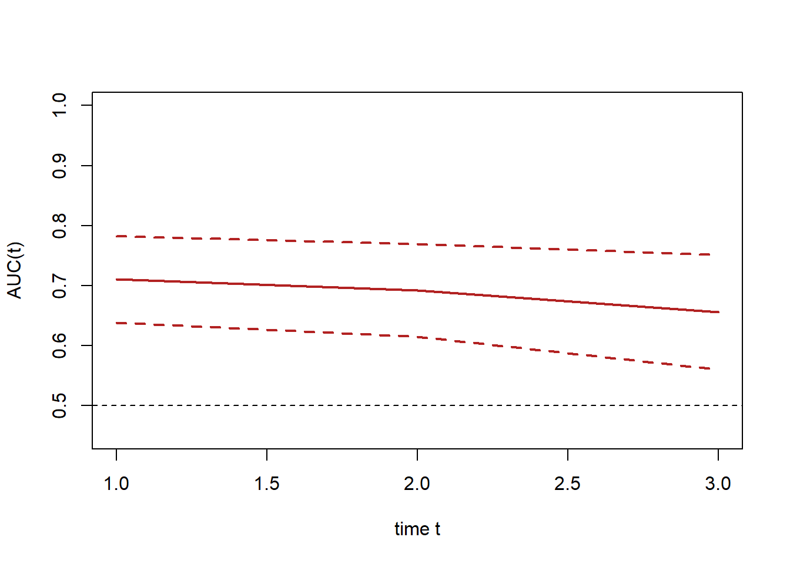
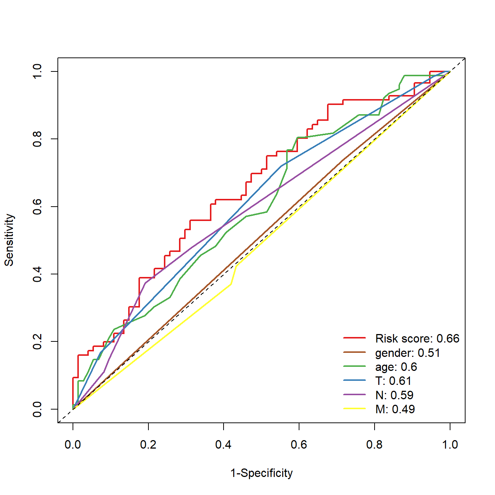

rm(list = ls())
load(file = "./datasets/timeROC.RData")22 生存数据ROC曲线绘制
不管是生存数据还是分类数据，绘制ROC曲线的原理都是一样的（详见第一章）。对于生存分析来说，由于它加入了时间因素，所以我们在绘制ROC曲线时，需要指定一个具体的时间点，在这个具体的时间点上，我们可以计算具体的生存状态以及对应的对应的概率，也就是可以把生存问题转换为二分类问题，这样才能绘制ROC曲线。
生存资料的ROC曲线绘制，最常见的那肯定是timeROC和survivalROC了，这两个包非常像，我比较喜欢用timeROC。
22.1 加载数据
22.2 多个时间点ROC
计算生存数据的ROC曲线以及AUC值，需要3列数据：生存时间，生存状态，以及你的分类依据（也就是你根据什么把样本分成生存还是死亡），在具体执行时，还必须指定时间点。
看一下画图所需的数据长什么样子，event这一列是生存状态，0代表living，1代表dead，futime这一列是生存时间，单位是年，riskScore这一列是分类依据。
str(df)
## 'data.frame': 297 obs. of 3 variables:
## $ event : num 0 0 1 0 0 1 0 0 0 0 ...
## $ riskScore: num -0.249 -0.511 -0.211 -0.427 0.279 ...
## $ futime : num 3.03 1.16 1.82 1.52 1.34 ...
head(df)
## event riskScore futime
## 1 0 -0.249325687 3.027500
## 2 0 -0.511105679 1.155833
## 3 1 -0.211305578 1.819167
## 4 0 -0.427056800 1.516667
## 5 0 0.278585747 1.344167
## 7 1 -0.006760815 0.050000下面我们使用timeROC包中的timeROC()函数计算不同时间点的AUC值。
# 加载R包
library(timeROC)
library(survival)
# 构建timeroc
ROC <- timeROC(T=df$futime,
delta=df$event,
marker=df$riskScore,
cause=1, #阳性结局指标数值
weighting="marginal", #计算方法，默认为marginal
times=c(1, 2, 3), #时间点，选取1年2年3年
iid=TRUE)
ROC #查看模型变量信息
## Time-dependent-Roc curve estimated using IPCW (n=297, without competing risks).
## Cases Survivors Censored AUC (%) se
## t=1 57 203 37 71.02 3.68
## t=2 66 106 125 69.23 3.94
## t=3 68 74 155 65.53 4.85
##
## Method used for estimating IPCW:marginal
##
## Total computation time : 0.07 secs.结果中给出了时间点在1年、2年、3年是的AUC值以及标准误(se)
然后我们就可以根据这个结果绘制ROC曲线了。
# 第1年的
plot(ROC,
time=1, col="red", lwd=2, title = "") #time是时间点，col是线条颜色
# 第2年的
plot(ROC,
time=2, col="blue", add=TRUE, lwd=2) #add指是否添加在上一张图中
# 第3年的
plot(ROC,
time=3, col="orange", add=TRUE, lwd=2)
#添加图例信息
legend("bottomright",
c(paste0("AUC at 1 year: ",round(ROC[["AUC"]][1],2)),
paste0("AUC at 2 year: ",round(ROC[["AUC"]][2],2)),
paste0("AUC at 3 year: ",round(ROC[["AUC"]][3],2))),
col=c("red", "blue", "orange"),
lty=1, lwd=2,bty = "n") 
如果你想绘制其他时间点的AUC以及ROC曲线，只需要在timeROC()函数中更改时间点即可。
由于我们使用了不同的时间点，每一个时间点都有一个AUC值，所以我们可以很简单的就画出time-dependent-AUC曲线：
plotAUCcurve(ROC, conf.int = T, col = "firebrick")
22.3 多指标ROC
大家在文献中也可能见到过多个指标的ROC曲线绘制在一张图上。下面给大家演示。
首先也是看一下所需要的数据结构，其中futime和event是必须的，另外的几列是你想要用来画ROC曲线的指标，在这里我使用了riskScore，gender，age，TNM分期。
在gender这一列，1是female，2是male，t，n，m这3列，数字代表不同的分期。
str(df2)
## 'data.frame': 297 obs. of 8 variables:
## $ event : num 0 0 1 0 0 1 0 0 0 0 ...
## $ age : int 59 63 65 73 59 66 56 42 61 48 ...
## $ riskScore: num -0.249 -0.511 -0.211 -0.427 0.279 ...
## $ futime : num 3.03 1.16 1.82 1.52 1.34 ...
## $ gender : num 2 2 2 1 2 2 1 2 2 2 ...
## $ t : num 4 4 4 3 3 3 5 3 NA 4 ...
## $ n : num 1 5 1 1 1 1 3 1 NA 1 ...
## $ m : num 1 1 1 1 1 3 1 1 3 3 ...多指标的ROC曲线非常简单，就是构建多个ROC，依次添加即可，时间点我们统一选择3年：
# riskScore的ROC曲线
ROC.risk <- timeROC(T=df2$futime,
delta=df2$event,
marker=df2$riskScore,
cause=1,
weighting="marginal",
times=3,
iid=TRUE)
# gender的ROC曲线
ROC.gender <- timeROC(T=df2$futime,
delta=df2$event,
marker=df2$gender,
cause=1,
weighting="marginal",
times=3,
iid=TRUE)
# age的ROC曲线
ROC.age <- timeROC(T=df2$futime,
delta=df2$event,
marker=df2$age,
cause=1,
weighting="marginal",
times=3,
iid=TRUE)
# T分期的ROC曲线
ROC.T <- timeROC(T=df2$futime,
delta=df2$event,
marker=df2$t,
cause=1,
weighting="marginal",
times=3,
iid=TRUE)
# N分期的ROC曲线
ROC.N <- timeROC(T=df2$futime,
delta=df2$event,
marker=df2$n,
cause=1,
weighting="marginal",
times=3,
iid=TRUE)
# M分期的ROC曲线
ROC.M <- timeROC(T=df2$futime,
delta=df2$event,
marker=df2$m,
cause=1,
weighting="marginal",
times=3,
iid=TRUE)把每个曲线拼在一起即可，添加一个图例：
plot(ROC.risk, time = 3, col="#E41A1C", lwd=2, title = "")
plot(ROC.gender, time = 3, col="#A65628", lwd=2, add = T)
plot(ROC.age, time = 3, col="#4DAF4A", lwd=2, add = T)
plot(ROC.T, time = 3, col="#377EB8", lwd=2, add = T)
plot(ROC.N, time = 3, col="#984EA3", lwd=2, add = T)
plot(ROC.M, time = 3, col="#FFFF33", lwd=2, add = T)
legend("bottomright",
c(paste0("Risk score: ",round(ROC.risk[["AUC"]][2],2)),
paste0("gender: ",round(ROC.gender[["AUC"]][2],2)),
paste0("age: ",round(ROC.age[["AUC"]][2],2)),
paste0("T: ",round(ROC.T[["AUC"]][2],2)),
paste0("N: ",round(ROC.N[["AUC"]][2],2)),
paste0("M: ",round(ROC.M[["AUC"]][2],2))
),
col=c("#E41A1C", "#A65628", "#4DAF4A","#377EB8","#984EA3","#FFFF33"),
lty=1, lwd=2,bty = "n") 
22.4 推荐阅读
ROC曲线的其他问题可参考以下推文：
- 多时间点和多指标的ROC曲线
- 临床预测模型之二分类资料ROC曲线的绘制
- 临床预测模型之生存资料ROC曲线的绘制
- ROC曲线(AUC)的显著性检验
- 生存资料ROC曲线的最佳截点和平滑曲线
- ROC曲线纯手工绘制
- R语言计算AUC(ROC曲线)的注意事项
- ROC阴性结果还是阳性结果
- 多指标联合诊断的ROC曲线
- ROC曲线最佳截点
- bootstrap ROC/AUC
- R语言多分类ROC曲线绘制
公众号后台回复ROC即可获取以上合集链接。